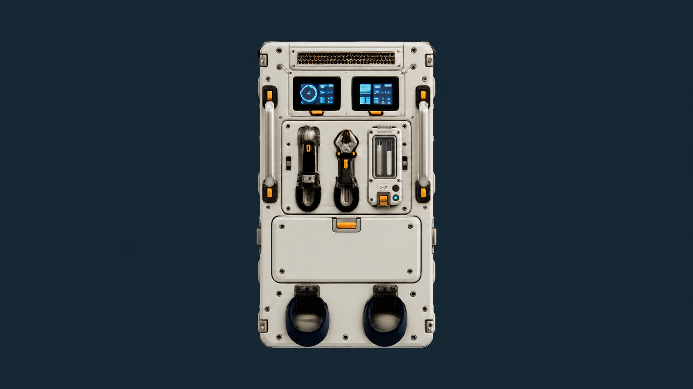
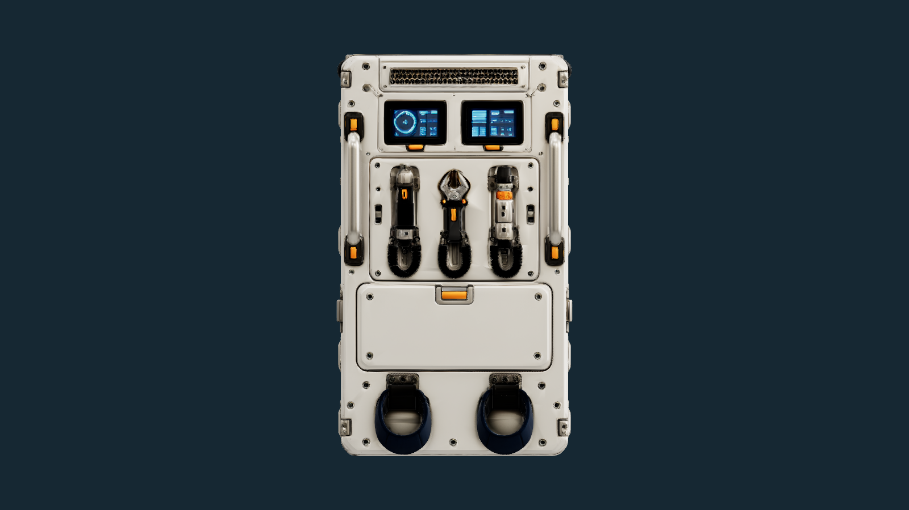
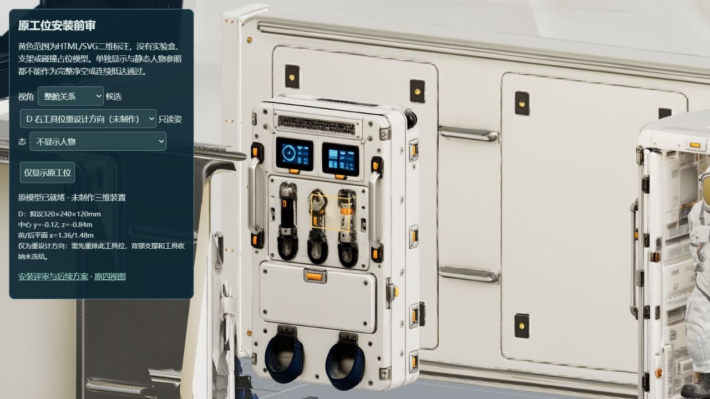
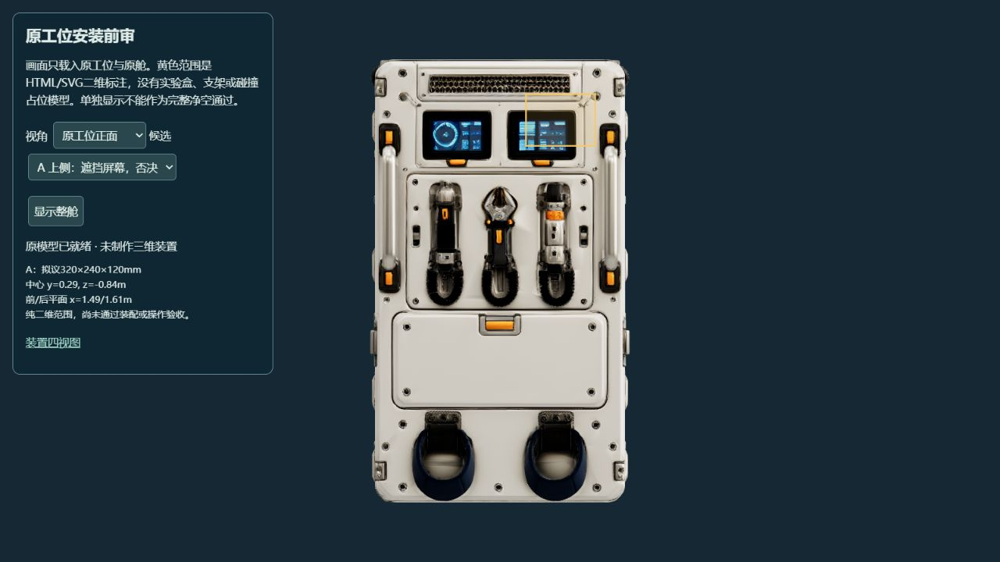
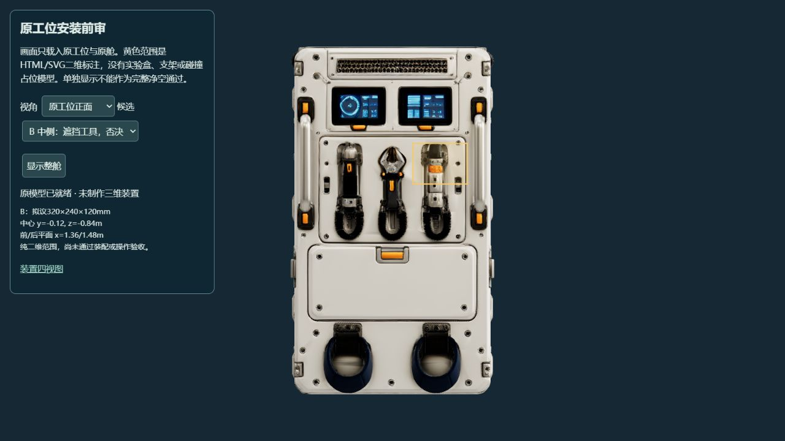
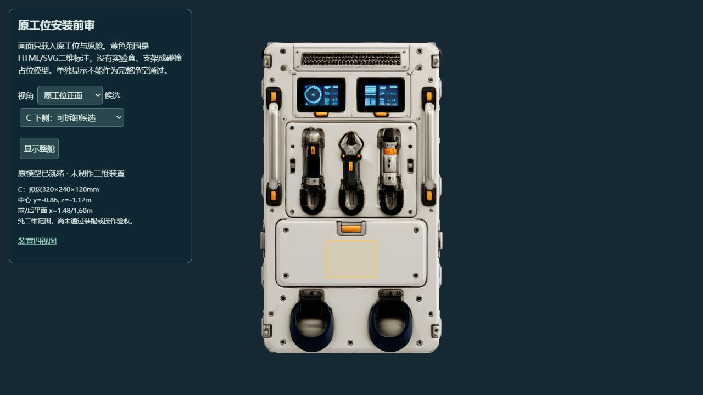
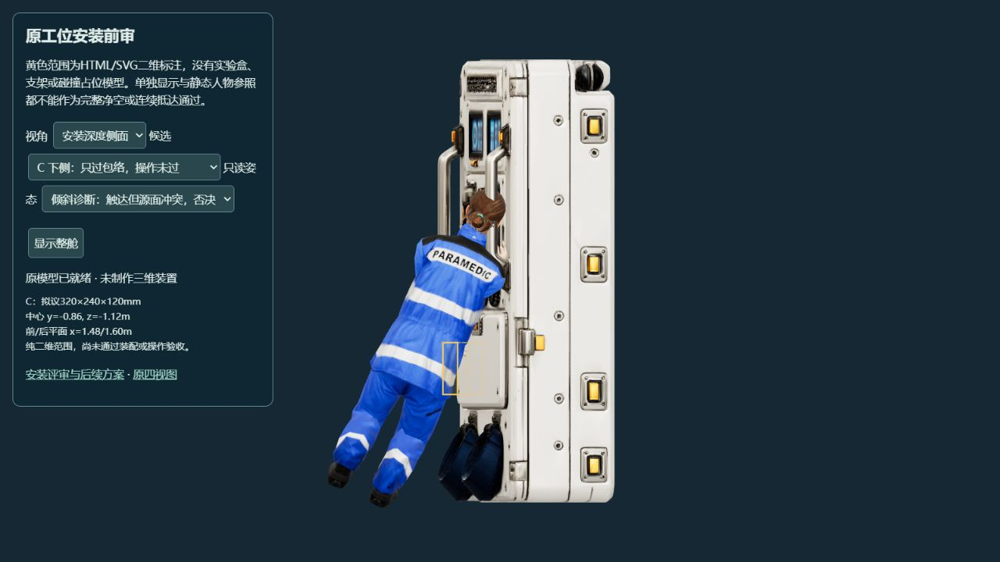
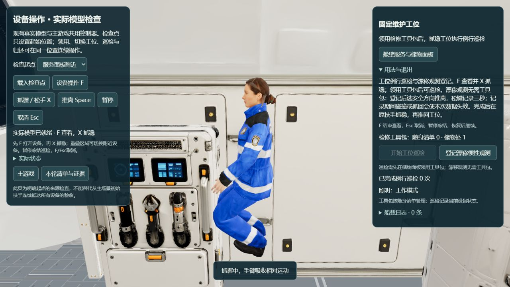

P3-R01 · 2026-10-28 · 原模型只读前审
先让实验装置能安装、能操作、能维护
原工位直接外挂的小盒子尚未通过。 上方遮仪表、中部挡工具；下部虽然表面较平整，操作姿态仍与原设备冲突。当前保留D“重设计右侧工具位”的二维方向，不生成不合格装置，不把静态触达数字当成装配通过。
D正面效果：右侧工具位改为密闭实验单元
下图为内置图像生成工具制作的二维设计图。 未制作或替换三维模型，未上传混元；不能作为安装、尺寸、触达或连续使用通过。正面外观仍待用户验收。

保留双屏、双扶手、左/中工具、下方检修盖和脚托的整体关系。新单元包含封闭双通道观察窗、C-01编号、扣具与实体控制。图像生成对原件有细节重绘，不代表源模型精确复刻；观察窗内容也不代表流体计算结果。对照：未修改的真实原工位正面

直接导出原模型画布；模型网格、材质、骨架和比例未变。与上方二维概念分开保存。发现的设计差异： 生成图采用较窄、较高的竖式单元，与上一版320×240毫米前盒及黄色二维范围不同。因此旧尺寸、B位置可达的拟议触点不能追认为该图按钮已验证；须重新统一尺寸、控制点、背部深度与侧/顶/背视图。原右工具的新收纳位置尚未确定。
原工位与舱内关系

仍是原模型。黄色框只是前期320×240×120毫米包络，与新竖式效果图外形不同；没有新增实验盒、支架、控制按钮或碰撞占位，右侧工具也没有被删除或挪动。
三个直接安装位置都没有通过

A 否决 会覆盖原仪表屏。即使面片取样不相交，也不能视为可用。
B 否决 会挡住右侧工具和取用空间。不能直接挂上去。
C 仅包络可放，操作未过 装置后平面拟为x=1.600米；221个2cm间距取样的原面约在x=1.61254–1.61270米，间隙约12.54–12.70mm。有限取样不能证明整个实体无交叉，也不能证明盖板能承重或安装后仍可打开。
为什么“手够得到”仍不能通过
从上方实际游戏到达姿态，空闲手触不到C的拟议控制区；较低的原抓点姿态仍不够。倾斜约25°后，上沿触点能够被原骨架触及，但另一部分身体与原源面冲突。没有缩短身体、延长手臂、修改权重或放宽碰撞来迁就设备。

这是明确的静态诊断起点，不能代替实际游戏到达。最初倾斜姿态的最低皮肤点低于所测地板约14mm；整体上移3cm后，两个远离接触手的头部样本仍位于原内侧首面之后约38–90mm。此为有限源面检查的冲突证据，不冒称完整封闭体积求交。该安装姿态未通过，停止继续局部挤姿态。
| 检查 | 观察 | 结论 |
|---|
| 全工位射线 | 925条；竖向5cm、纵向4.75cm | 前表面含屏幕、工具与凹凸结构，不能当安装平板 |
| A/B/C范围细查 | 各221点，2cm间距 | 只说明离散表面距离，不能代替使用、维护和装配 |
| 较低原抓点 | 右手可形成原生接触；B位置的拟议前触点可达 | 支持进一步研究右侧工具位重设计，未证明新设备接触或连续换抓路线 |
| C盖板维护 | 装置会占据原盖板正面区域 | 必须有拆卸/收纳/开盖规则；当前没有可用固定结构或盖板开合验证 |
D方向：把右侧工具位统一重设计成可更换实验插箱
相比把盒子叠在现有器材前面，D需要先重排这一处工具位，并规划原工具的新收纳位置。目标是保留双屏、左右扶手、其他工具、下部检修盖和脚托的整体关系，给样品、密封观察窗、操作区和背部连接留出完整空间。具体来源候选能否保留这些目标仍须检查，不能保证生成模型精确复刻。
前期二维范围示意（保留记录，与新竖式效果图尚未统一）
本轮提供原位置取舍和第一张正面效果。下一阶段应先统一D的正/背/侧/顶输入，明确背部连接及支撑总深度、原工具收纳、样品装卸和真实换抓路线，再确认制作范围与混元来源。不能把效果图或布局图当已授权上传或本地建模。
已经改清楚的现有操作提示
工位现在明确区分：例行巡检需要先领用工具包，漂移观测不需要工具包。观测说明补充“记录期间碰撞/抓回会失效；完成后抓稳原扶手再推回工位”，避免把终态报告与后续正常重抓混淆。动作、库存、数据、物理与取消逻辑保持。

原模型检查页实际抓稳后的面板：储物1/随身0，巡检禁用，漂移登记可用；此处未开启新的观测，也不作为新装置使用证据。
证据与边界
原表面925条射线 · 最初触达与表面记录 · 控制区与较近姿态 · 保留地板失败 · 上移后的源面冲突 · 保护原件哈希 · 二维图完整提示与执行方式 · 本轮检查记录
本轮336项测试通过、类型检查和10.62秒生产构建通过；原件保持。只读查看器按代码处理取消加载、隐藏/退出释放与恢复重载；本轮IAB未产生真实隐藏事件，未测GPU释放或长时性能。新实验三维装置、支架、工具重排、流体求解均未制作，完整EVA和用户视觉仍未通过。